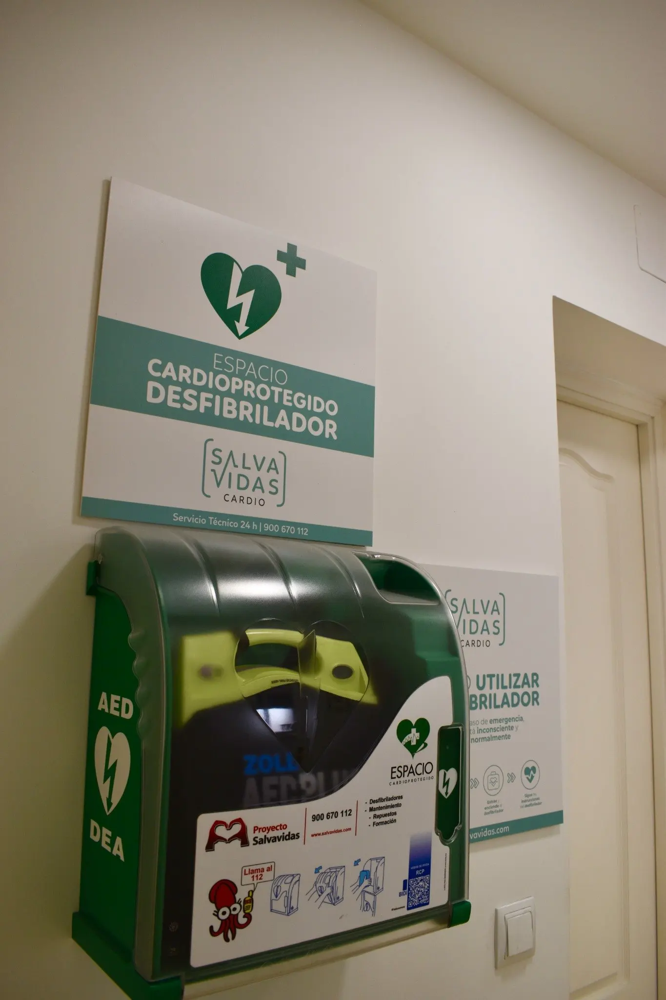

Fundas de porcelana y zirconio
Soluciones estéticas y funcionales para proteger dientes debilitados, mejorar la mordida y recuperar una sonrisa natural.
Más información →
En Clínica Dental Marcos Martínez cuidamos tu salud bucodental con una atención cercana, tratamientos personalizados y un equipo comprometido con tu bienestar dental en Carabanchel, Madrid.
Ver tratamientos dentales ⌄Tratamientos pensados para cuidar tu boca con una valoración previa, explicaciones claras y un plan adaptado a cada paciente.
Soluciones estéticas y funcionales para proteger dientes debilitados, mejorar la mordida y recuperar una sonrisa natural.
Más información →.avif)
Diagnóstico y tratamiento de problemas periodontales para cuidar tus encías, prevenir molestias y conservar tus dientes.
Más información →
Recupera piezas dentales perdidas con soluciones planificadas para mejorar la masticación y la estética.
Más información →.avif)
Tratamiento para salvar dientes dañados o infectados, aliviar el dolor y evitar la extracción cuando es posible.
Más información →¿Buscas otro tratamiento dental?
Ver todos los tratamientosEn Marcos Martínez Clínica Dental cuidamos tu salud bucodental con un trato cercano, una valoración honesta y tratamientos pensados para niños, jóvenes y adultos.
Estamos ubicados en Camino Viejo de Leganés, muy cerca de Oporto y Opañel.
Estudiamos cada caso para recomendar el tratamiento dental más adecuado.
Queremos que te sientas cómodo, escuchado y seguro desde la primera visita.
Trabajamos para mejorar tanto la salud de tu boca como la estética de tu sonrisa.



En Marcos Martínez Clínica Dental valoramos cada caso de forma individual para ofrecerte tratamientos adaptados a tus necesidades, cuidando tu salud bucodental y la estética de tu sonrisa en Carabanchel, Madrid.
Pide cita llamando al 915 60 81 09Nuestro proceso está diseñado para cuidar tu salud bucodental desde el primer momento.
Analizamos tu salud bucodental en detalle para ofrecerte un tratamiento adaptado.
Utilizamos recursos actuales para trabajar con precisión y explicar mejor cada caso.
Un equipo preparado para cuidar tu boca con criterio clínico y trato cercano.
Te acompañamos en todo el proceso para que te sientas cómodo y seguro.
Los pacientes destacan el trato cercano, la claridad al explicar los tratamientos y la sensación de estar en una clínica familiar.
Atención cercana y profesional, con explicaciones claras antes de iniciar el tratamiento.
Paciente de la clínicaUn equipo que transmite tranquilidad, especialmente en visitas delicadas o tratamientos largos.
Paciente de la clínicaValoración honesta, presupuesto claro y seguimiento durante el proceso.
Paciente de la clínicaArtículos claros para resolver dudas habituales antes de acudir a consulta.

Los implantes dentales ayudan a recuperar piezas perdidas y mejorar la funcionalidad de la boca.
Leer más →
Una limpieza profesional ayuda a prevenir problemas de encías, caries y acumulación de sarro.
Leer más →
El bruxismo puede causar molestias mandibulares, desgaste dental y dolor de cabeza.
Leer más →C. del Camino Viejo de Leganés, 115, 1ºD, Carabanchel, 28019 Madrid.
Estamos aquí para ayudarte. Contacta con la clínica para solicitar una valoración o resolver tus dudas antes de venir.
C. del Camino Viejo de Leganés, 115, 1ºD, Carabanchel, 28019 Madrid
Estamos en Camino Viejo de Leganés, 115, Piso 1ºD, 28025 Madrid, junto a la zona de Oporto y Opañel, en Madrid.
Sí. La clínica atiende a niños, adolescentes y adultos, con servicios de odontopediatría, ortodoncia, odontología general y tratamientos avanzados.
Entre otros: implantes, ortodoncia, estética dental, bruxismo/ATM, endodoncia, periodoncia, prótesis, cirugía dental, limpiezas y odontología conservadora.
Sí. La atención se realiza bajo petición de cita previa para poder valorar cada caso con el tiempo necesario.
Sí. La clínica está en una zona bien comunicada por Metro Oporto/Opañel y varias líneas de EMT.